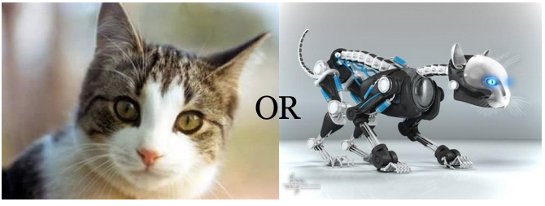

PROJECTS
Virtual-Pet-Amok
The Lesum is a 9.85-kilometre long river in northern Germany, right tributary of the Weser, navigable for Class III ships. It is formed at the confluence of the rivers Wümme and Hamme, near Ritterhude, northwest of Bremen. It flows west and flows into the Weser in Bremen-Vegesack. Wikipedia 
High Street Hospital
The Lesum is a 9.85-kilometre long river in northern Germany,
right tributary of the Weser, navigable for Class III ships.
It is formed at the confluence of the rivers Wümme and Hamme,
near Ritterhude, northwest of Bremen. It flows west and flows
into the Weser in Bremen-Vegesack. Wikipedia